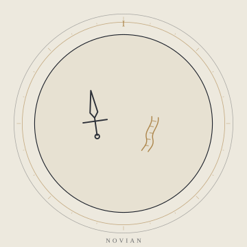
NOVIAN · new
诺维安
把路走成歌的人 · 魔具使 · 剑术师 / 骑士
「路是走出来的；歌，是唱给后来的人听的。」
出身小镇的少年，听着七贤者的冒险故事长大。他带着一把据说是矮人与精灵共同锻造的剑，前往格兰蒂亚，认识同伴，组建小队，去走那些被史书略过的遗落区。
他沉稳、平易，却仍有少年气；常常被一种说不清的直觉引向某个方向。他不像传统意义上的英雄，更像一个愿意先迈出一步的人。
出身小镇佩剑矮人与精灵共铸意象路 / 歌
THE CAST
二十一个人。七个人在当下上路，七个人在五百年前结束战争，七个人在封印的另一侧守着各自的人。
题记保留试做页的格言体。人物档案以根目录 Outline.md 为准；标「施工中」「名字未定」「原稿尚简」的地方，保留原样。
THE NEW HEROES
七个人，七条路。他们不是被预言选中的，而是在预言之后，仍然愿意上路的人。

「路是走出来的；歌，是唱给后来的人听的。」
出身小镇的少年，听着七贤者的冒险故事长大。他带着一把据说是矮人与精灵共同锻造的剑，前往格兰蒂亚，认识同伴，组建小队，去走那些被史书略过的遗落区。
他沉稳、平易，却仍有少年气；常常被一种说不清的直觉引向某个方向。他不像传统意义上的英雄，更像一个愿意先迈出一步的人。
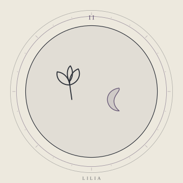
「月亮有两面。我只被允许看见一面——所以我要去另一面。」
被格兰蒂亚的居民抚养长大的孤儿，就读于格兰蒂亚魔法学院。她认真、要强、有点天然呆，被同学叫作「书呆子」；在魔力学理论上是同届最优秀的学生。
毕业前后，她被一个神秘人袭击，魔力受到抑制，被诺维安所救。为了寻找贤者之石，也为了查清袭击与魔力受抑的缘由，她与诺维安一同上路。
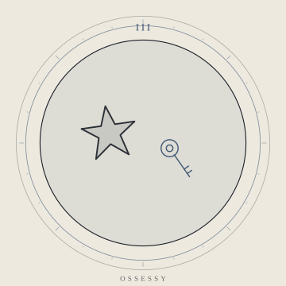
「雨会停。但雨声不会。」
自称「欧瑟希」的年轻炼金术师，来自大陆东方；这不是他的本名，而是为了在魔法大陆活动取的拉丁名，取自「执念」。
他在格兰蒂亚前往芬特罗德的路上与主角二人相遇。洒脱、随性、有书卷气，爱开玩笑；实战经验却远比外表可靠，常在关键处扭转战局。
他寻找贤者之石，是为了复活童年的玩伴林霖。
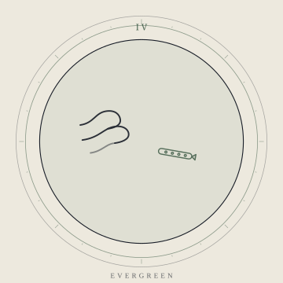
「常青不是不会枯萎，是枯萎之后还记得春天。」
约两百岁的精灵，外貌停在二十岁上下。她曾是精灵王族的继承人，却离开族群，在人类中间生活了很久；对人类亲近，使她在精灵中被视作异类。
她与人类亚泽相识、同行，并从他那里得到「伊芙」这个名字。亚泽自然死亡后，她留在记忆森林，替他看着那些还在生长的东西。
见到莉莉亚胸口的精灵魔法印记后，她加入小队。活木长弓与木笛，是她身上最像「森林」的两件东西。
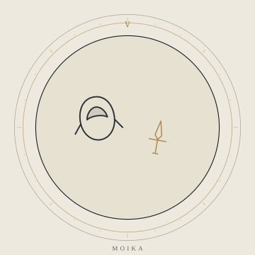
「锁是给人开的，不是给人看的。」
十五岁的哥布林游侠，来自黄金之城。她戴着土黄色兜帽，围墨绿色长围巾，腰间挂着父亲送的带鞘短刀。
她为探索世界而踏上旅途；关于她的过去，人物原典仍写着「施工中」——这既是一个未完成的档案，也是她留给故事的空白。
她擅长开锁、设陷阱、在别人看不见的地方行动；她并不觉得「盗贼」是贬义词。
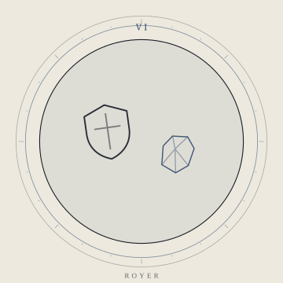
「石头记得每一锤。」
来自钢铁之城的矮人近卫。矮人尚锻造、重传统，他却不甘心只做「族里的一员」。
他为向族人证明自己而加入小队，站在队伍最前面。人物原稿尚简，但「证明」这个动机已经足够重。
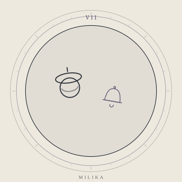
「神谕很轻，轻得像一句晚安。」
人类神官，在无梦之城与主角团相遇。她能听见伊莲女神的神谕，却并不真正理解它。
为了弄清神谕的意思，她踏上旅途。她所听见的声音，并不总是来自她以为的地方。
THE SEVEN SAGES
七个人，一场战争，五百年。史书把他们写成传说；传说把他们写成了别的东西。
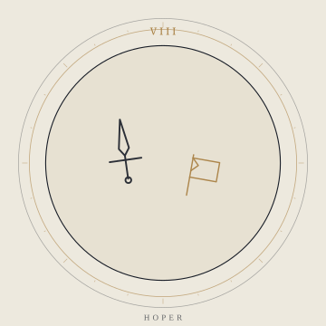
「希望不是旗子，是最后一个还站着的人。」
七贤者小队的队长，人类骑士。他是「人类希望的集合」——不是因为他最强，而是因为所有人都愿意把后背交给他。
他用一把长剑守住了同盟的战线，也守住了身边的人。战争结束后，他提议七贤者过普通人的生活；他自己也想回到斯卡琳和孩子身边。
史书对他的死只有一行字：红月之夜，战死。
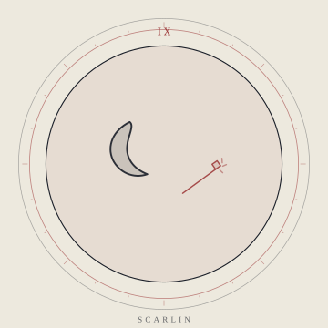
「如果月亮有背面，那它也应该有一部可以讲授的定律。」
魔法世家瑟伦家的长女，师从大魔法使傅泽。她建立了现代魔法的理论体系，把「魔力」与「原质」放进同一套可教授的语言里。
她的魔杖上嵌着绯色玛瑙，挥动时会勾出圆月的影子。战后，她继续研究魔种魔法，并公开主张两套魔法同源；这让她在同盟高层中树敌。
史书只留下一句「禁术失控」。红月之夜究竟发生了什么，小说还没有说。
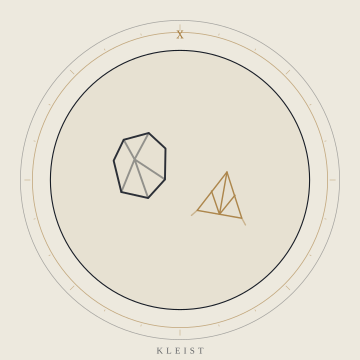
「如果死亡不可逆，那我至少要把「不可逆」再验算一次。」
百年难遇的天才炼金术师。他能唤来风雨、震动大地，也能把一块原质拆成许多种可能。
他发现了贤者之石的诸多性质，并以此开发出多种强力魔法；「贤者之石」这个别称，就是因他而来。
战后，他用后半生研究让同伴复生的魔法，直到自然死亡，也没有完成。
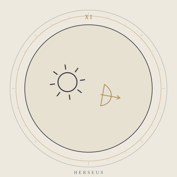
「太阳照常升起，所以有些人必须活到它升起。」
精灵王族最年轻的继承人，能牵动太阳的光辉，把它化成箭。
七贤者中唯一活到五百年后的人；也是唯一知道欧若拉预言全貌的人。
战后他失踪了。史书只留下一句猜测：他或许仍在森林里，过着平静的生活。
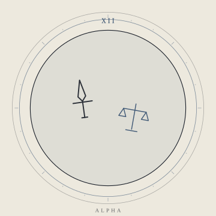
「正义如果只能选一边，那我选不再选。」
七贤者中最年轻的成员，人类游侠。双亲在战场上罹难，她对正义有一种近乎苛刻的执着。
她双手各持一把短刀，能在寂静中完成裁决。战争胜利时，她只有十七岁。
战后，她听到了荷珀与斯卡琳关于战争正义性的争论；不久后，史书只留下「殉职」两个字。
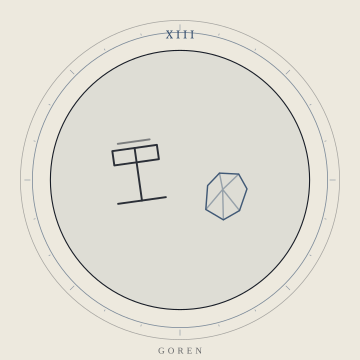
「锤子落下之前，山是山；落下之后，山还是山。」
矮人王子，七贤者中的战士。他代表矮人一族坚毅的力量，用战锤在战场上筑起牢不可破的屏障。
战争结束后，他选择留在封印旁。两百年后，他在那里老死，成为「战士之魂」。
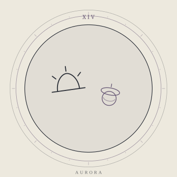
「黎明不是等来的，是有人先醒了。」
受女神伊莲祝福的圣女，七贤者中的神官。她为众生传达神谕，用祝福驱散伤痛，用光明驱散黑暗。
战后她留下预言：这场战争会带来五百年的和平，之后将出现新的勇者小队，定义未来。
她早逝，灵魂成为神使——从此，神谕有了一个具体的、却不再能干涉世间的声音。
THE DEMON ARMY
七个人，一片被夺走的土地。他们中的大多数，只是为了守住自己人。
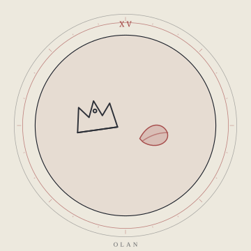
「王座不是椅子，是所有人抬头看你的角度。」
龙族出身的魔王，魔骑士。她是纯粹的数值怪——不靠阴谋，靠正面把对手碾过去。
同盟战争期间接任魔王，带领魔族守住最后的土地；战败后被七贤者封印。五百年后，封印松动，她重新回到王座。
她为守护子民而战。对她来说，魔王不是「恶」的化身，而是最后一道防线。
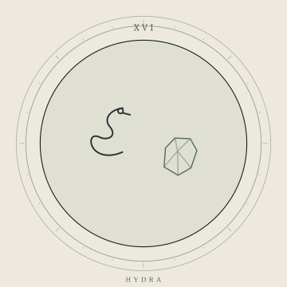
「九个脑袋，九个答案；没有一个能说服我。」
九头蛇，蛇族的代表，魔王军的炼金术师。他与欧兰是师姐弟，关系很好。
战争后期，他成为主战派领袖；他相信只有彻底打赢，魔族才有未来。
他曾用贤者之石召唤出神话中的九头蛇。
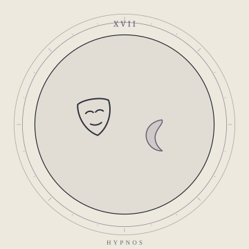
「梦是唯一不会说谎的谎。」
魔王军的幻术师，被称为「三当家」。她执着于战争的意义，战斗风格以幻境为主。
她的战斗很少见血，却比见血更难摆脱。
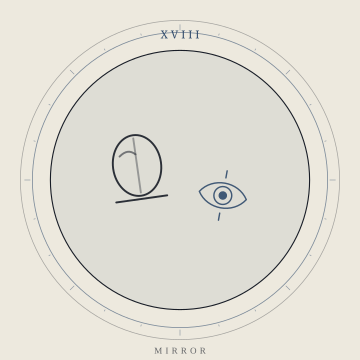
「我只是把你不想看的那一面擦亮了。」
名字未定的恶魔战士，欧兰之下最强近战，也是魔王军里最嘴贫的一个。
他像一面镜子：你越不想看见的那一面，他越要擦亮给你看。
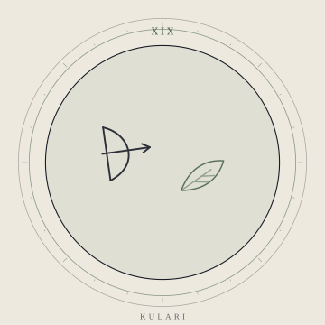
「我背叛的不是王，是我曾经相信的故事。」
精灵弓箭手，原精灵王族的继承人。挚爱被杀、又得知战争真相后，他加入魔王军，领导叛军。
他为死去的挚爱与自己所知的真相而战，不是为魔王而战。
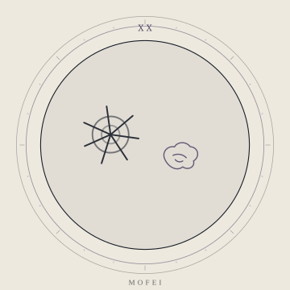
「梦的尽头有一张网；我只是替它守夜。」
第四百九十五任梦之掌司，巢族代表，织梦者一族的蜘蛛。她贯穿主线，是那个在梦的尽头看着所有人的人。
战后，她是唯一能窥探梦境的人，开始寻找变局；她不急着站队，只看梦会把谁推到台前。
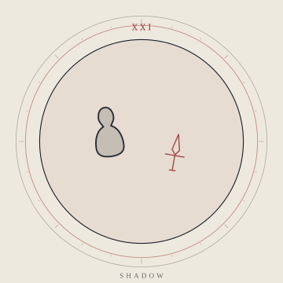
「名字是别人叫的；影子是自己做的。」
魔王军首席刺客，也是最年轻的领袖。名字是别人叫的，影子是自己做的。
她是最锋利的那道影子：不站在阵前，只出现在最需要她的位置。